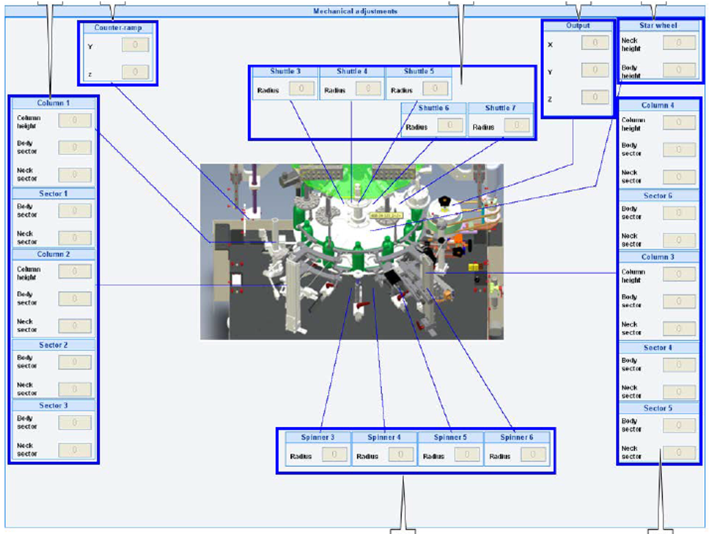
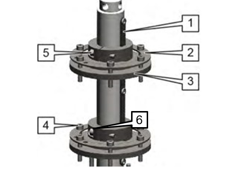
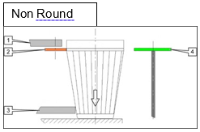
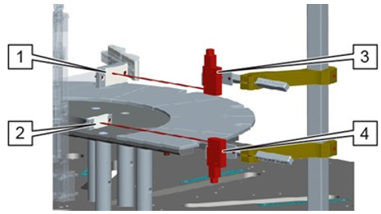
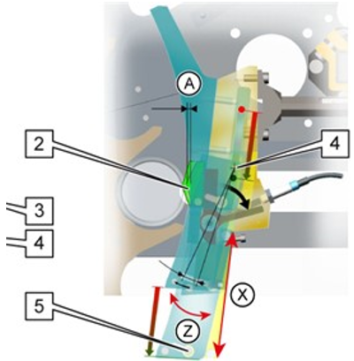
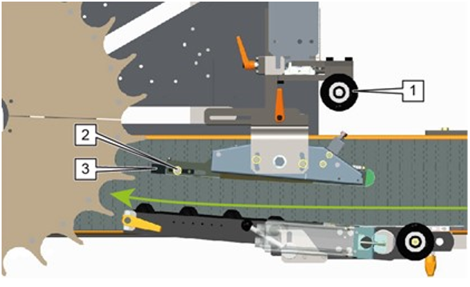
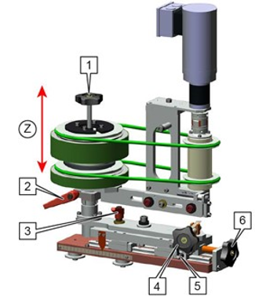
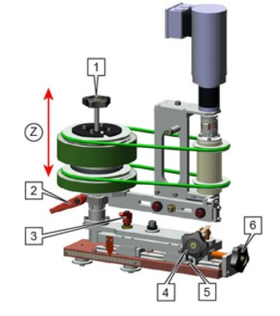
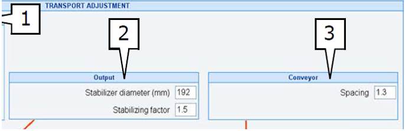
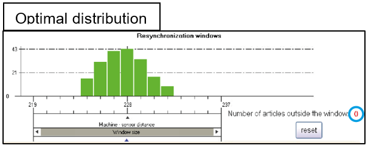

Container Handling Setup - Tiama - MX4
INS-03-100
Revised: 2021-10-12
Purpose and Application
Purpose
To define a work instruction for proper setup of round container handling on MX4 Machines.
Application
This work instruction applies to all Soul manufacturing facilities.
Safety
Observe Soul standard safety requirements and procedures defined by the Global Environmental Health & Safety (EH&S) organization, as well as all applicable local, regional, and national requirements. Safety equipment and instructions specific to the completion of this work instruction are detailed in the Instructions Section.
Instructions
-
Before starting the work instruction activity, perform the following steps:
- Do not begin these tasks without confirmation that personnel directly involved have completed the required training associated with the work instruction activity and have reviewed this document.
- Gather necessary tools and equipment as identified below in the Equipment Section.
- Wear and use additional Personal Protective Equipment (PPE) and safety equipment required for this specific work instruction.
- Obey all applicable safety requirements and procedures.
- Notify appropriate personnel of the activity and estimated time needed to complete the tasks.
- Clearly identify, mark-off, and secure the designated area defined by the work instruction activity.
- Follow all Lockout/Tagout procedures when work instruction activity requires isolating energy in the designated area. Verify energy is isolated before starting work.
- After verifying that energy is isolated, remove the protective guarding and open the safety interlock gates.
- Obtain any job history information from the job change coordinator and confirm the requirements and specifications before proceeding.
- Job changes provide an excellent opportunity to replace any worn components on the MX4 machines. An inspection of each machine should be performed prior to a job change to allow time for ordering any needed parts.
-
To prepare the job change variable components, perform the following steps:
-
Starwheels Prepare or select the appropriate number of pockets and
type of neck and body starwheels according to the characteristics of the
articles being inspected.
- For short articles, a single starwheel can be used.
- For shaped articles, three starwheels can be used.
For more information about selecting the appropriate starwheels according to the container dimensions, review the MX4 User Manual – Definition of Variable Parts / Starwheels.

-
Outfeed guides Two plastic outfeed guides are needed to extract the
articles from the main starwheel to the conveyor. They are generally placed
level with a cylindrical part of the article's body. To stabilize certain
articles, an additional plastic guide can be placed at neck level.
For more information about selecting the appropriate plastic outfeed guides according to the container dimensions, review the MX4 User Manual.

-
Infeed screw The infeed screw spaces out the articles when they enter
the machine and synchronizes their position with the pockets of the main
starwheel
- The infeed screw is delivered with one or two rows, depending on the option selected.
- There are three types of infeed screws:
- Double infeed screw (MX 4/CHECK+V6 type).
- Double infeed screw with reduced spacing (MX 4/CHECK+V6 type).
- Single infeed screw (M type).
For more information about selecting the appropriate infeed screws according to the container dimensions, review the MX4 User Manual.

-
Bore parts: Spindle The bore performs three inspections:
- Minimum inner diameter D1 (Enters).
- Bore diameter D2 (Enters).
- Maximum inner diameter D3 (Does not enter).

-
Starwheels Prepare or select the appropriate number of pockets and
type of neck and body starwheels according to the characteristics of the
articles being inspected.
-
To enable the detectors, perform the following steps:
-
Switch to Manual Mode.

-
Select Configuration
 > Presence
Detections
> Presence
Detections
 to display the Presence
Detections screen.
to display the Presence
Detections screen.

-
To enable a detector installed in station "x" (x=1 to 7).
- Click on the number "x" of this station. Example: click in the zone [1]to designate station 1.

-
The list of available detectors is displayed.
- Click on the icon of the detector to activate (Example: PLUG/Calibration 3) and confirm with the OK button.

-
Switch to Manual Mode.
-
To prepare and stop the machine, perform the following steps:
-
Stop the Machine normally.
- Press the OFF button.

-
Raise the movable frame to its maximum height.
- Verify that it is in Manual Mode in order to release the pneumatic lock of the moving part, allowing the movable frame to move.
- Turn the Raise/Lower switch to “Raise” while holding down the red pushbutton (OFF). Upward movement is limited by the zero offset induction sensor.
- Operating the Raise/Lower switch automatically releases the pneumatic lock of the moving part so that the movable frame can move.

-
Stop the Machine normally.
-
To create or load a receipt or container record, perform the following steps:
-
Click on the Article button on the main screen. Then
click on the Article management menu button .


-
Creating a new article receipt or recordIn the Article management
screen, go to the article list frame and select the article you wish to create
an article record for.

-
In the list of articles frame, click on the “New”
button.
- Enter the name of the new article record and click on the Validate button.


-
Enter the article conveyance speeds in Production and Manual modes.
- Access the Sub article settings and enter the following values:
- Production throughput rate [5]: Enter (in BPM) the default value of the article conveyance speed to apply in Production.
- Min. throughput [6] to Max. throughput [7]: Enter the minimum and maximum limits for the Production throughput.
- Tooling height [8]: Enter the length in mm of the PLUG/Calibration bore tool.
- Cylinder activation [4]: Activates the use of the infeed cylinder. Activated by default.

- Access the Sub article settings and enter the following values:
-
Enter the mechanical adjustment settings for this article.
- Click on the Mechanical adjustment button
 in the Article
menu.
in the Article
menu. - The values entered in this screen are used as a guide to facilitate the mechanical adjustments during future job changes. They do not affect the functioning of the MX4.

- Click on the Mechanical adjustment button
-
Set the rotators diameter.
- Click on the Transport adjustment button
 in the Article
menu.
in the Article
menu. - Enter the rotators diameter value in the corresponding box [5].

- Click on the Transport adjustment button
-
Click on the Article button on the main screen. Then
click on the Article management menu button .
-
To remove, change and adjust the components for the current job change, perform the
following steps:
-
Push back the article sectors and rotation systems:
- Loosen the indexing levers [1] and move back the article rotators [3].
- Loosen the screws [2] or [5] and move back the station guide rails [4].


-
Dismount the upper starwheel (neck).
- Loosen the locking hub screws [1].
- Remove the washer retaining the starwheels [2].
- Take the neck starwheel out from the top.

-
Change the infeed screw(s):
- Release the end by loosening the lever (or screw) [5].
- Remove the infeed screw(s) [4].
- Note down the code and spacing of the new screw(s).
- Mount the new infeed screw(s).
- Adjust the lever (or screw) [5].

-
Change or replace the slide plates if necessary.

-
Install the lower starwheel selected to run for the job change.
- Make sure the cotter pin [1] on the key shaft always points forward.
- Adjust the height of the starwheel by unlocking the height lock screw [6].
- Place the lower starwheel level with the new article and assemble it with the retaining washer [2] and the 7 screws [4].
- For setting up the height of the lower starwheel, reference the
examples:
- Round containers [2].
- Non round (shaped) containers [3].



-
Adjust the spacing of the 1 or 2 reflectors and the height of the Oval arm
aligned with the Oval sensors.

-
Install the upper starwheel selected to run for the job change.
- Make sure the cotter pin [1] on the key shaft always points forward.
- Adjust the height of the starwheel by unlocking the height lock screw [5].
- Place the upper starwheel level with the new article and assemble it with the retaining washer [2] and 7 screws [4].
- For setting up the height of the upper starwheel, reference the
examples:
- Round containers [1].
- Non round (shaped) containers [1].


-
Calibrate the article presence PA sensors.
- Adjust the height of the PA sensor [3 or 4] aligned with the height of the reflector [1 or 2].
- Adjust the distance of the mechanical PA in relation to the articles by unscrewing the screws [2]. The roller [1] should come into contact with the articles in the pockets in order to trigger the detector when the article passes.


-
Adjust the height and pressure of the article side rotation.
- Loosen the screws [1] and adjust the height of the article rotator.
- Adjust the pressure of the article rotators by loosening the indexing levers [2].
- Verify the setup of each side rotation unit to ensure that there is 3 to 6 mm (1/8 to 1/4 inch) of wheel deflection when a container is in station.


-
Adjust the height and depth of the sectors PLUG Calibration.
- Loosen the translation and rotation lock screws of the lower sector [3 & 4].
- Adjust the position of the lower sector in direction (X), (Y) and (Z).
- Verify that the article passes.
- Tighten the lock screws of the lower sector to leave a 2 mm gap in direction (A) between the article and the article motion sensor [2].


-
Push back the article sectors and rotation systems:
-
To calibrate the feeder system, perform the following steps:
-
Height adjustment – single screw:
- Loosen the lock screw [2] to use the pin [1].
- Adjust/rotate the pin [1] to lower or raise the infeed screw system to place the screw on either side of (and more or less at an equal distance from) the article's center of gravity.
- Tighten the lock screw [2].

-
Double infeed screw Lengthwise and angular adjustment – double
screw:
- Loosen the locking pin [3] to release the bearing pads on the guide rails.
- Loosen the locking lever [1] to orientate the infeed screw unit.
- Move the infeed screw's support [2] in direction (X) and use the tip of the pivot to orientate the screw worm to the starwheel in direction (Z). The article should be guided directly into the pocket.
- Leave a gap (A) of 1 cm in relation to the starwheel.
- Tighten the locking lever [1].
- Tighten the locking pin [3].

-
Height adjustment – double screw:
- Loosen the locking lever [2] to use the lever [1].
- Adjust the lever [1] to lower or raise the infeed screw system to place the screw on either side of (and more or less at an equal distance from) the container's center of gravity.
- Tighten the locking lever [2].

-
Infeed guide
Lengthwise adjustment – Infeed guide:
- Loosen the levers [1] and [2].
- Loosen the screws [3] or lever to orientate the infeed guide.
- Place an article at each end of the infeed screw.
- Move the infeed guide [4] in direction (X) and (Y) and orientate it in direction (Z) so as to leave a gap of 3 mm between the infeed guide and the 2 articles stuck to the infeed screw.
- Tighten the screws [3] and levers [1] and [2].

-
Height adjustment – Infeed guide:
- Release the lever [1] and then adjust the height of the infeed guide:
- Halfway up the two screws (for a double infeed screw).
- Facing the screw (for a single infeed screw).
- Lock the lever [1].
- Loosen the screw [2].
- Adjust the position of the peg [3] so that there is as little gap as possible between it and the article path.
- Tighten the screw [2].


- Release the lever [1] and then adjust the height of the infeed guide:
-
Adjust infeed synchronization Go to the Article
 > Transport
Adjustment
> Transport
Adjustment
 screen.
screen.
- Click on the Add button.
- On the Screw type management screen, click on the Plus button [1].


-
Height adjustment – single screw:
-
To adjust the conveyor and outfeed drum, and the speed settings, perform the
following steps:
-
Adjust the outfeed drum:
- Loosen the lever [2].
- Adjust the height of the roller (in direction Z) by turning the adjustment wheel [1].
- Adjust to ensure the maximum length of vertical (Z) contact between the article and the foam rollers. Example: for a beer bottle, contact of the 2 foam rollers on the body part.
- Adjust so that the drum's belts on the container sidewall are parallel to the conveyor.
- Tighten the lever [2]


-
Article at position A (station 7): The article is at the bottom of the
starwheel pocket. The plastic guides must be in contact with the article,
tangential to the bottle. To do so:
- Loosen the lever [8] and the longitudinal adjusting screw of the plastic guide’s support [7].
- Move the plastic guides support (in direction X) to bring the plastic guides into contact with the article.
- Tighten the screw [7] and tighten the lever [8].
- Finely adjust the position of the plastic guides support with the 2 screws [9].


-
Adjust the angle of the guide belt.


-
Go to the Article
> Transport
Adjustment
 screen.
screen.
-
Adjust the conveyor and stabilizing factor:
- For the Spacing factor [3], the goal is to have an article retained by the infeed screw before being released into the starwheel pocket, and to have enough regular spacing between the articles at the outfeed.
- For the stabilizing factor [2], the goal is to correctly stabilize the articles in the drum.
- As a general rule, both values should be between 1.2 and 1.5.
- Validate the modification with the Apply button.


-
Adjust the outfeed drum:
-
To adjust the resynchronization, perform the following steps:
-
Go to the Article
 > Transport
Adjustment
> Transport
Adjustment
 screen.
screen.


-
Click on the histogram reset button in the
resynchronization window [3].

-
Repeat steps E and F - (five times):
- If the Computed distance varies by more than one half of the article diameter, review the outfeed mechanical settings.
- If the variations are less than half a diameter, copy the reading to the Output sensor distance field [5].
- Validate the modification with the Apply button


-
Run a batch of articles through the machine. The histogram is automatically
refreshed and incremented by one as each article passes through.
- The histogram display area is filled with columns representing the number of articles seen at the distance indicated on the horizontal axis.
- The first and last columns should contain no articles (their value should be zero).


-
Go to the Article
-
To perform the ejection system setting, perform the following steps:
-
Before making this adjustment, set the machine's resynchronization distance
(Section 3.9).

-
Go to the Article
 > Transport
Adjustment
screen.
> Transport
Adjustment
screen.
-
Measure the distance between the reject resynchronization sensor and the
sensor of sampler number 1, 2 or 3.
- Example: distance [A] for ejector number 1 and distance [B] for ejector number 2.

-
Switch the machine to Production mode at the set point rate specified for
this article.

-
Before making this adjustment, set the machine's resynchronization distance
(Section 3.9).
-
To perform the cam calibration on the MX4 and lower the movable frame, perform the
following steps:
-
Press the red OFF button to stop the machine.

-
Select Settings
 > Presence
Detections
> Presence
Detections
 to display the
Presence Detections screen.
to display the
Presence Detections screen.

-
Click on the Apply button [5] to run cam
resynchronization.
- The value entered for the Starwheel stop end [2] is copied to the Theoretical Starwheel stop end line [3].

-
Validate the modification with the Apply button
 on the Settings menu.
on the Settings menu.
- The cams must be calibrated on each job change.
-
Press the red OFF button to stop the machine.
-
Upon completion of tasks, perform the following steps:
- Replace protective guarding and close safety interlock gates.
- Confirm the designated work area is clear and communicate to personnel the intent to restart energy.
- After the designated work area is confirmed clear and personnel are aware of the pending restart, follow all Lockout/Tagout procedures to restart energy supplied to the designated area. Verify energy is active.
- Remove signs and markings from the designated work area.
- Perform basic housekeeping duties. Clean up the work space, tools and equipment, dispose of trash, put tools and equipment in assigned area.
- Notify appropriate personnel that the work instruction activity has been completed.
Required Training
Before performing this work instruction, applicable personnel must be trained by an authorized trainer on the required training contents listed in this document.
Equipment
Allen wrench set
Wrench set
Screwdriver set
References
Document Classification
- Efficiency and Throughput
- Quality
Fundamentals
- INS-311
Approval
|
Region |
Representative |
|---|---|
|
Europe |
Robert Kurpiel, Bruno Laumier, Stefano Lucidi, Hans de Willigen |
|
Latin America |
Marlon Bravo |
|
Mexico |
Yigael Hernandez |
|
North America |
David Gladwin |
|
Global Operations |
Bob Morin |
Revision History
|
2021-10-12 |
Approved by Bob Morin, Global Inspection Network Leader |
|
Original Issue |